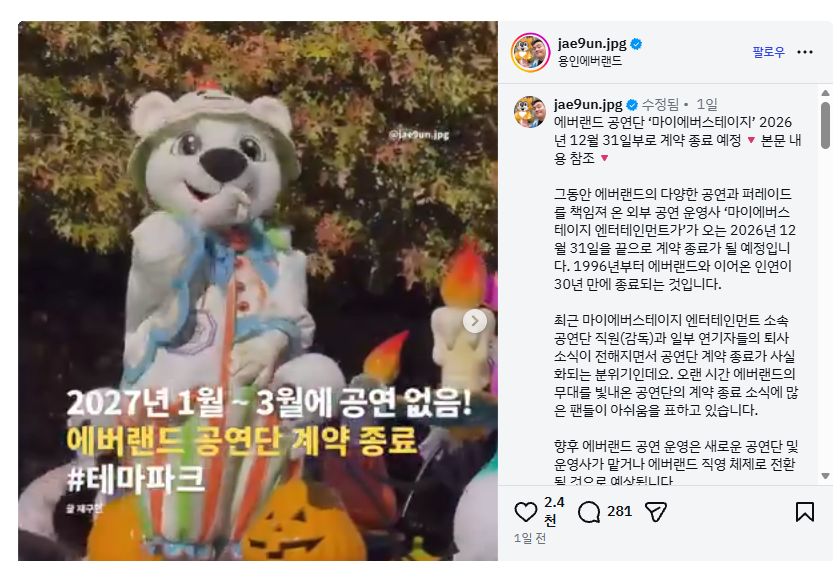

에버랜드 공연단 ‘마이에버스테이지’ 2026년 12월 31일부로 계약 종료 예정🔻본문 내용 참조🔻
그동안 에버랜드의 다양한 공연과 퍼레이드를 책임져 온 외부 공연 운영사 ‘마이에버스테이지 엔터테인먼트가’가 오는 2026년 12월 31일을 끝으로 계약 종료가 될 예정입니다. 1996년부터 에버랜드와 이어온 인연이 30년 만에 종료되는 것입니다.
최근 마이에버스테이지 엔터테인먼트 소속 공연단 직원(감독)과 일부 연기자들의 퇴사 소식이 전해지면서 공연단 계약 종료가 사실화되는 분위기인데요. 오랜 시간 에버랜드의 무대를 빛내온 공연단의 계약 종료 소식에 많은 팬들이 아쉬움을 표하고 있습니다.
향후 에버랜드 공연 운영은 새로운 공연단 및 운영사가 맡거나 에버랜드 직영 체제로 전환될 것으로 예상됩니다.
2026 크리스마스 축제에는 블링블링 X-mas 퍼레이드만 진행되며, 매직 인 더 스카이 불꽃놀이도 매주 금요일, 토요일에만 진행합니다. (크리스마스 기념 그랜드 스테이지 쇼 없음)
이에 따라 운영 체계 변경 및 재정비 기간인 2027년 1월부터 3월 말까지 약 3개월간 에버랜드의 공연, 퍼레이드 및 캐릭터 포토타임이 운영되지 않을 예정입니다.
이후 2027년 3월 말부터 새로운 공연과 퍼레이드가 재개될 것으로 예상되는데요. (기존에 진행했던 카니발 판타지 퍼레이드, 문라이트 퍼레이드 등)
그동안 에버랜드에서 멋진 무대와 잊지 못할 추억을 만들어 주신 마이에버스테이지 엔터테인먼트 공연단 여러분께 진심으로 감사드립니다.
*공연단 계약 종료 일정 및 향후 공연 운영 일정은 변동될 수 있습니다.
https://www.instagram.com/p/DgEaD0Nk0Bn/?evlk=eW9qMTlpbWl3aW4%3D
에버랜드 t익 타고 울고 롯데월드 바이킹 타고 울고
내가 탈수 있는건 후룸라이드 정도 밖에 없는듯